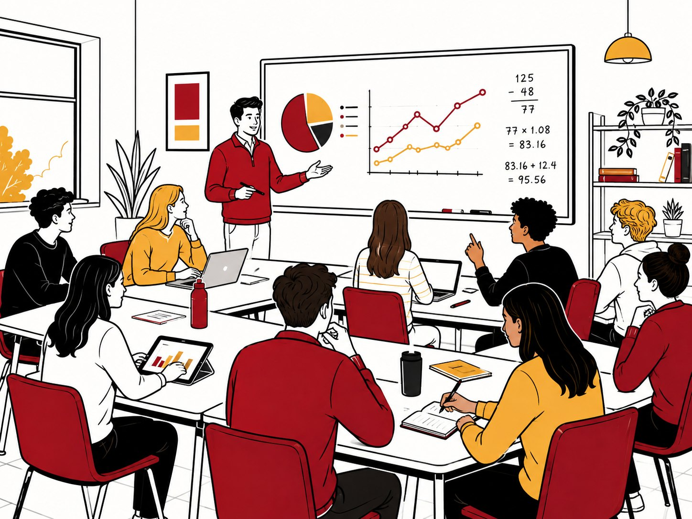
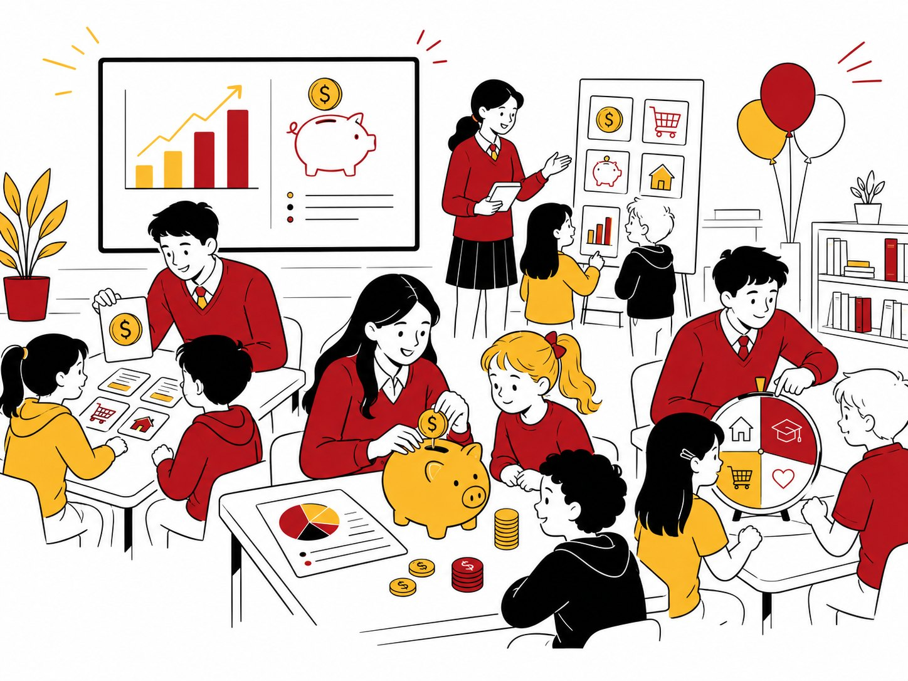

Investment Research
How an idea becomes an investment thesis: research companies, examine assumptions, and learn to distinguish a strong argument from an unsupported opinion.

The Finance Program · First cohort 2026
A selective, specialized program for Cathedral Catholic students with a serious interest in finance, investing, and markets — 25 students, a smaller classroom, and a year that ends with you defending your own investment thesis to professionals.
Still deciding between marketing, strategy, operations, entrepreneurship? The Flagship is designed for that exploration. Already drawn to markets, money, and financial decision-making — this was built for you.
The classroom
Rather than exploring every function of a business, 25 students concentrate specifically on finance. Every session runs the same five-part discipline:
The goal is not to learn financial terminology. It is to start thinking like someone who works in finance.

Semester one
Session 01 · Tuesday, September 29 · 2:30–4:15 PM
Finance starts with understanding money itself — saving, investing, compounding, risk, and the principles behind long-term wealth.
Session 02 · Wednesday, October 21 · 2:30–4:15 PM
Why does one investment rise while another falls? How markets operate, and how investors evaluate risk, return, and information over instinct.
Session 03 · Tuesday, November 17 · 2:30–4:15 PM
Move from the investor’s perspective inside the company: raising capital, evaluating investments, allocating resources, analyzing performance.
Practice & Rehearsal · Wednesday, November 18 · 2:30–4:30 PM
A dedicated session to rehearse, receive feedback, refine your reasoning, and prepare for the capstone — turning financial knowledge into confident communication.
Semester one capstone · Friday, December 4
The first semester ends differently than it began. Instead of learning in the classroom, Finance Division students become the teachers — designing and running financial-literacy activities for younger students from Catholic elementary schools.
They must take concepts that seem complicated and make them understandable, practical, and engaging. Every Finance Division student participates.
Because one of the best tests of whether you understand something is whether you can teach it to someone else.

Semester two
The focus shifts. Students stop asking “how does finance work?” and start asking “what would I do with this information?”
How an idea becomes an investment thesis: research companies, examine assumptions, and learn to distinguish a strong argument from an unsupported opinion.
AI is changing how financial information is researched and used. The question that matters: what should technology calculate — and where does human judgment still rule?
Bring the research together into a clear recommendation: what the company does, why the opportunity exists, how it’s valued, what could go wrong — and why your conclusion holds.
The final challenge
Research a publicly traded company. Develop an investment thesis. Present your recommendation to professionals with experience evaluating investments — and answer their questions about every assumption behind your analysis.
This is not a presentation about a company. It is a recommendation. By the end, the question is no longer do you understand finance?
Would you put money behind your own analysis?
Is it for you?
You do not need investing experience, or to know how to value a company. But you should already have a genuine interest in finance — investing, markets, wealth management, investment banking, corporate finance, fintech, economics — and want to go significantly deeper into it.
Still exploring the whole world of business? That’s exactly what the Flagship is for.
Where to next